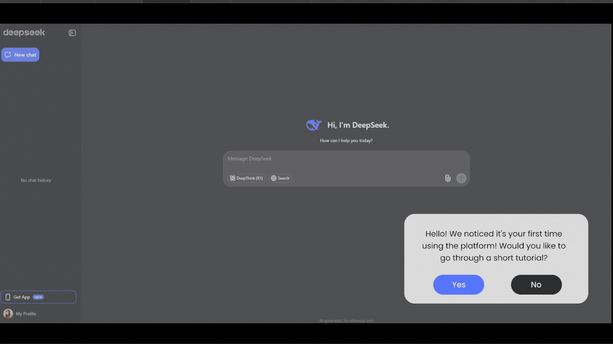
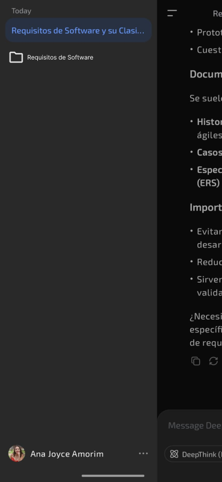
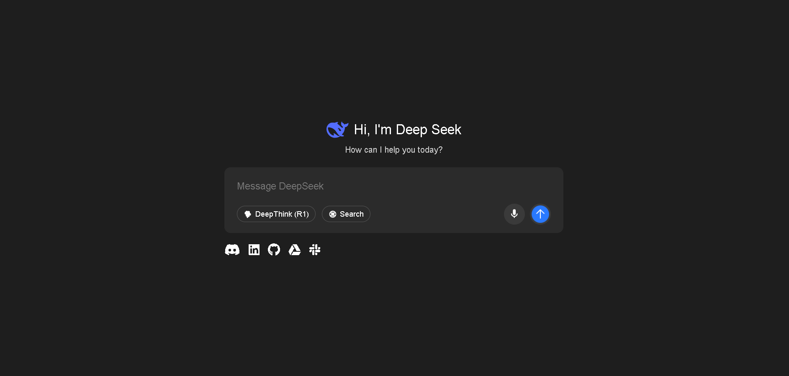

Prototipação
Introdução
A prototipação é uma fase crucial no desenvolvimento de sistemas, produtos ou aplicações, pois permite a construção de modelos iniciais que antecipam como a solução final deve se comportar [1] [2]. Esses protótipos servem como ferramenta para validar requisitos, testar funcionalidades e garantir que as expectativas dos usuários estejam sendo atendidas [2]. Ao longo desse processo, é possível coletar feedback constante, detectar erros de forma antecipada e fazer ajustes rapidamente — o que impacta positivamente na qualidade, na experiência do usuário e na eficiência do projeto final [1]. Além disso, a prototipação facilita o diálogo entre as equipes técnicas e os stakeholders, minimiza retrabalho em etapas posteriores e ajuda a manter os custos sob controle [1] [2]. Por fim, ao comparar os resultados esperados com os obtidos nos testes, reforça-se a confiabilidade da solução e seu valor real para o público-alvo [2].
A classificação da prototipagem discerne em diferentes níveis de fidelidade, variando desde esboços em papel (low-fidelity) até simulações altamente interativas (high-fidelity), dependendo do objetivo e do estágio do projeto [2]. Prototótipos de baixa fidelidade são eficazes nas fases iniciais de ideação, pois permitem explorar possibilidades de forma rápida e com baixo custo [2]. Já os protótipos de alta fidelidade são utilizados em momentos mais avançados, permitindo testes próximos da experiência real do usuário. A escolha adequada do tipo de prototipagem influencia diretamente a qualidade das decisões de design, usabilidade e engenharia durante o desenvolvimento da solução [2].
Metodologia
Para o desenvolvimento dos protótipos dos requisitos não implementados, foi utilizado o software de design Figma e o uso das linguagems de marcação e estilzação de texto HTML e CSS. Cada protótipo possui um card, o qual contém o ID do requisito que originou aquele protótipo bem como a descrição do requisito, por fim, é apresentado o protótipo de alta fidelidade daquele requisito.
Tabela 1 - Template para a organização dos protótipos.
| Item | Explicação |
|---|---|
| ID do requisito | - |
| Descrição do requisito | - |
| Representação | - |
Autor: Luiz
Validação com Usuário
A validação com o usuário foi feita de forma presencial, no dia 25 de junho.
Participantes da validação
| Participante | Papel |
|---|---|
| Luiz | Integrante do grupo, responsável por coordenar a validação com o usuário. |
| Luisa Mel | Estudante de engenharia aeroespacial de 20 anos de idade, responsável por validar os protótipos desenvolvidos para o artefato. |
Tabela de Contribuições
| Integrante | Atividade | Links |
|---|---|---|
| Ana Clara | Desenvolvimento dos protótipos para os requisitos não implementados #RF28 | #RF28 |
| Ana Joyce | Desenvolvimento dos protótipos para os requisitos não implementados #RF33, #RN10 | #RF33, #RN10 |
| Davi | Desenvolvimento dos protótipos para os requisitos não implementados #RF34, #RF37 | #RF34, #RF37 |
| Luiz | Desenvolvimento dos protótipos para os requisitos não implementados #RF25, #RF26, #RF29 | #RF25, #RF26, #RF29 |
Protótipos Desenvolvidos
#RF25 - O usuário deve poder controlar quais dados são compartilhados (chat, histórico de buscas, localização)
| Item | Explicação |
|---|---|
| ID do requisito | #RF25 |
| Descrição do requisito | O usuário deve poder controlar quais dados são compartilhados (chat, histórico de buscas, localização) |
| Representação |  |
Autor: Luiz
#RF26 - Deve haver autenticação multifator opcional para acesso a funcionalidades avançadas
| Item | Explicação |
|---|---|
| ID do requisito | #RF26 |
| Descrição do requisito | Deve haver autenticação multifator opcional para acesso a funcionalidades avançadas |
| Representação | |
Autor: Luiz
#RF28 - Deve incluir tutorial interativo na primeira execução, explicando as principais funcionalidades
| Item | Explicação |
|---|---|
| ID do requisito | #RF28 |
| Descrição do requisito | Deve incluir tutorial interativo na primeira execução, explicando as principais funcionalidades |
| Representação |  |
Autor: Ana Clara
#RF29 - Exibir status do servidor em tempo real (Online, Manutenção, Sobrecarga)
| Item | Explicação |
|---|---|
| ID do requisito | #RF29 |
| Descrição do requisito | Exibir status do servidor em tempo real (Online, Manutenção, Sobrecarga) |
| Representação |
Autor: Luiz
#RF33 - Permitir organização de conversas em pastas ou listas por tema ou projeto
| Item | Explicação |
|---|---|
| ID do requisito | #RF33 |
| Descrição do requisito | Permitir organização de conversas em pastas ou listas por tema ou projeto |
| Representação |  |
Autor: Ana Joyce
#RF34 - Implementar comandos de voz para entrada e saída de informações
| Item | Explicação |
|---|---|
| ID do requisito | #RF34 |
| Descrição do requisito | Implementar comandos de voz para entrada e saída de informações |
| Representação |  |
Autor: Davi Emanuel
#RF37 - Conectar nativamente a ferramentas populares (Google Drive, Outlook, GitHub etc.) via integrações diretas
| Item | Explicação |
|---|---|
| ID do requisito | #RF37 |
| Descrição do requisito | Conectar nativamente a ferramentas populares (Google Drive, Outlook, GitHub etc.) via integrações diretas |
| Representação |  |
Autor: Davi Emanuel
#RN10 - Especificar e permitir ao usuário optar por participar ou não do uso de seus dados em re-treinamento ou venda de modelos
| Item | Explicação |
|---|---|
| ID do requisito | |
| Descrição do requisito | Especificar e permitir ao usuário optar por participar ou não do uso de seus dados em re-treinamento ou venda de modelos |
| Representação |  |
Autor: Ana Joyce
Referências Bibliográficas
1. SERRANO, Milene; SERRANO, Maurício. Requisitos – Aula 23. Brasília, DF: Universidade de Brasília, Campus Gama, [s.d.]. Disponível em: https://aprender3.unb.br/pluginfile.php/3096017/mod_resource/content/2/Requisitos%20-%20Aula%20023.pdf. Acesso em: 18 jun. 2025.
2. UNIVERSIDADE VIRTUAL DO ESTADO DE SÃO PAULO (UNIVESP). Projeto e desenvolvimento do produto – Aula 12 – Prototipagem. YouTube, 21 jun. 2018. Disponível em: https://youtu.be/SBCNKHU37ZQ?si=hbDPHrf6FooMss_2. Acesso em: 20 jun. 2025.
Hist√≥rico de Vers√µes üìÖ
| Versão | Data | Descrição | Autor(es) | Revisor(es) |
|---|---|---|---|---|
| 18/06/2025 | 1.0 | (#P01) Criação da Página, Introdução e Referências | @Mateus | @ |
| 26/06/2025 | 2.0 | (#P01) Adição da gravação da validação com o usuário | @Luiz | @ |
| 26/06/2025 | 2.1 | (#P01) Adição da metodologia e dos protótipos desenvolvidos | @Luiz | @ |
| 27/06/2025 | 2.2 | (#P01) Adiciona o termo de consetimento da gravação da validação dos protótipos. | @Luiz | @Ana Clara |